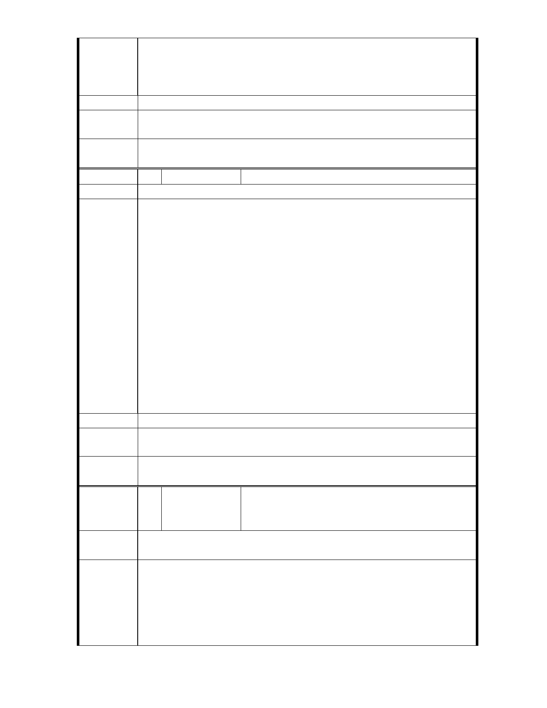

紅花美麗，也要有綠葉陪襯，環視世界各大博物館，均
在人口稠密地區，週邊人文多元社會活動繁榮，建築景觀搭
配得宜，不影響博物館整體評價。藝術生活化、生活藝術化
，相輔相成，更能彰顯故宮獨特文化。
建議辦法
專
結
案
小
組
論
相關建議錄請市府納入細部計畫參考。
委
決
員
會
議
同編號 11
編 號 16 陳情人 吳議長碧珠
建議位置
本市士林區臨溪里郭里長肇富向碧珠陳情, 經召開協調會邀
請都發局協助處理，現鄉親聯署提出「護土」陳情書。陳情反映
至善路 2 段 117－155 號及 143 巷早期原為私人住宅用地，民國
76 年配合故宮之建議變更為機關用地，惟其中 117-125 號僅供故
宮做為宿舍使用，且現多已轉手賣給一般市民做住宅使用;另
149-155 號為核建之合法房屋,133、133-1 號、143 巷為舊有合法房
屋, 變更迄今仍一直為私人住宅使用。
陳 情 理 由 配合本次「外雙溪地區都市計畫通盤檢討」，鄉親積極陳請恢
復為住宅用地,並經故宮於本（100）年 6 月 3 日函覆略以「大故宮
計畫並未包括陳情基地範圍…都市變更決定權，屬於各級政府之
都市計畫委員會決定,本院尊重權責相關單位意見辦理」。本案現已
進入都市計畫委員會審議程序。
為保障市民財產權益,建議於本次「外雙溪地區都市計畫通盤
檢討」中恢復編定為住宅區, 敬請 鈞長惠予重視與協助。
註:檢附郭里長等鄉親之「護土」陳情書。
建議辦法
專
結
案
小
組
論
同編號11
委
決
員
會
議
同編號 11
郭里長肇富等 25 人（(甲)至善路二段 117-125
編 號 17 陳情人 單號住戶(乙)149-155 單號住戶,133、133-1、
143 巷住戶）
建議位置
(甲)至善段 5 小段 27 地號
(乙)至善段 5 小段 13-26 地號
「護土」陳情書
陳情理由
一、本案土地、建物之由來
壹、甲地段:117-125 單號集合住宅
1.民國 75 年 9 月 2 日，本案建物完成，取得「台北市政府工
務局使用執照－－75 使字 0890 號」【附件一】。起造人;故
- 33 -